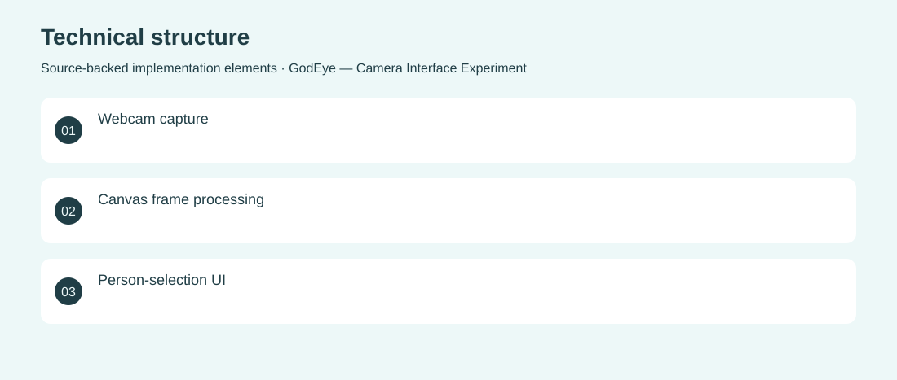

The project
Explore how a browser interface can combine camera capture, person selection and image-analysis feedback. A React prototype lays out camera and information panels and tests pixel-color heuristics on captured webcam frames. Implemented the camera capture interface, selection components and an experimental skin-color detection routine. Archived experiment; the heuristic is not validated face recognition or identity verification.
The problem
Explore how a browser interface can combine camera capture, person selection and image-analysis feedback.
The solution
A React prototype lays out camera and information panels and tests pixel-color heuristics on captured webcam frames.
My contribution
Implemented the camera capture interface, selection components and an experimental skin-color detection routine.
Technical structure

The portfolio cover is an editorial illustration. No live product screenshot is presented for this project.
Showcase assets
{kind=link}
{kind=link}
{kind=link}
New portfolio identity. Newly designed marks are portfolio treatments, not claims of official client branding.